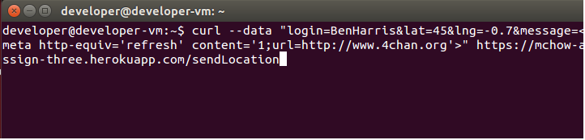
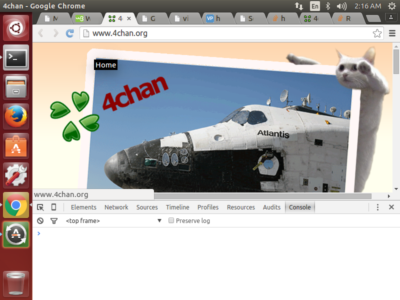
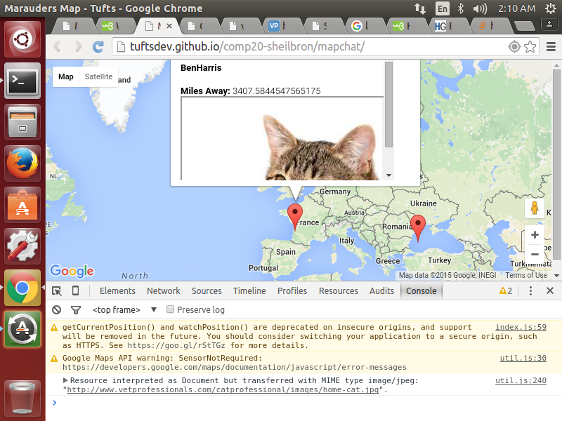
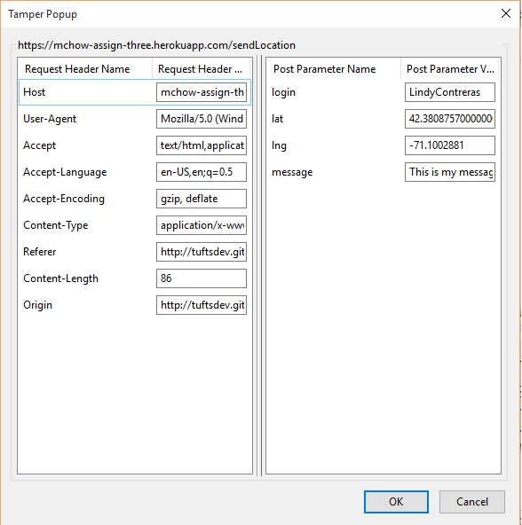
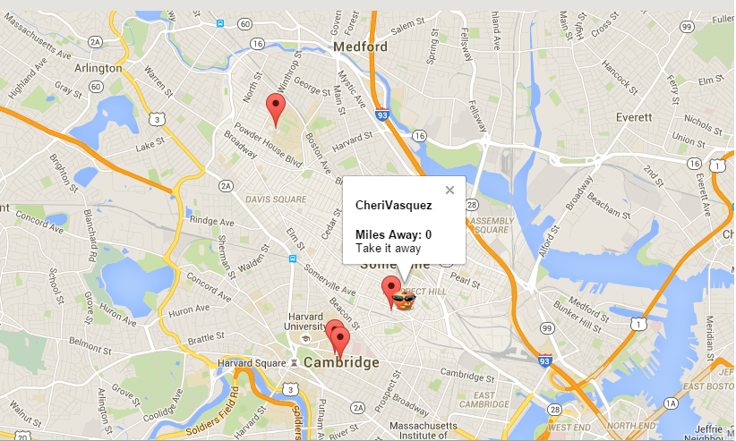
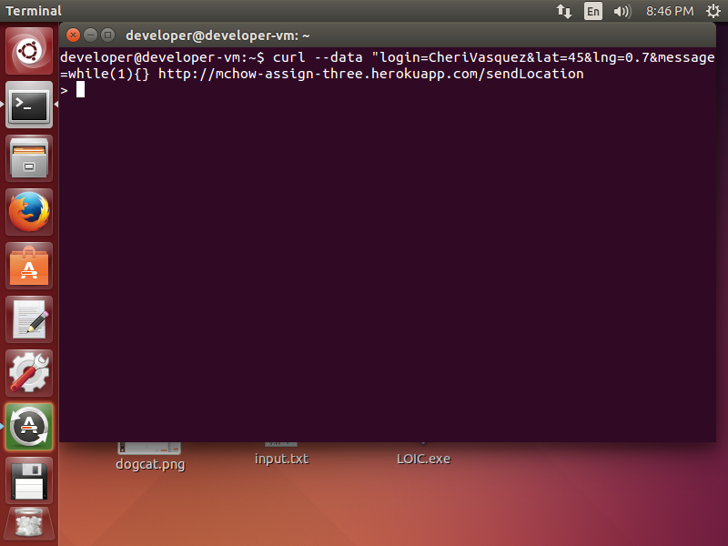
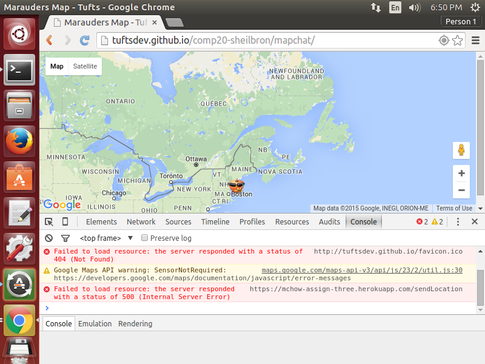

Assessment of MapChat
By Matthew Carrington-Fair
Introduction
This security and privacy assessment tests the web application "MapChat" created by Sam Heilbron. The application takes user geolocation and displays their location on a map along with a personalised message, and has server-side support allowing use from multiple clients. Once a user's login, latitude, longitude, and message are verified by the server, their information is stored in a database. In return, the client receives the information of all users stored within the database and places their locations on a map using Google Maps API. The web application also provides other services, including a GET /latest.json API allowing clients to make a query to the database for the latest login of a particular user, and an index page where the list of logins are displayed for all to see. However, this application has several flaws and security issues that put the information of users at risk.
Methodology
To begin, I performed a series of "black-box" tests on the application by focusing solely on attacking what was presented to me. In this case, it was the client-side map application. Using the easily available source code in my browser's developer tools and 'curl', I was able to find initial vulnerabilities quite easily. I then moved onto focusing on more subtle vulnerabilities after reviewing the server-side source code.
Abstract of Findings
While the variety of vulnerabilities were not too immense, the impact and the security risks of these vulnerabilities ranged from minor to severe. From an outsider's perspective, it was pretty easy defacing the website and using the application for my own purposes. The most severe attacks are those that would harm the server-side capabilities and those have been minimalized through careful precautions. However, there is still a breach in sever-side security allowing users to cause internal server errors by sending particular sets of data.
Issues Found
Cross-Cross-Site Scripting
- Vulnerability affects the POST /sendLocation API
- Risk level - High: This vulnerability is quite severe, as it has many implications and can be used maliciously in a variety of ways. When data is submitted to the server via the client-side application or through curl, there is no restriction on the content of the user's message. Therefore, it is possible to inject malicious javascript and html. While the server does anticipate this and encodes special characters of the data such as
(), <>, and '', the client-side application does not.

- Therefore, a simple insertion of html as seen above results in the following when "BenHarris" is clicked on in the map

- While this example is somewhat harmless, the implication is very severe. Other websites could use this application as a form of advertising - by injecting in redirects under valid usernames, unsuspecting users could very easily be redirected to commercial sites.
- Other examples of this....

- Although this is a severe vulnerability, it is quite simple to fix. All that has to be included is a simple function to escape user input such as
str.replace(/[\-\[\]\/\{\}\(\)\*\+\?\.\\\^\$\|]/g, "\\$&");This will prevent any injection of html or javascript to alter the page contents
Application uses no authentication
- Affects POST /sendLocation API
-
- Risk level - Medium: This vulnerability - while severe, is something that can be fixed relatively easily. As it stands, there is nothing to stop users who are on the client-side Mapchat from impersonating other users. Through the use of the Tamper Data addon, I was able to intercept the POST request sent to the server when I visited the site.
- From here, simply by changing the "login" information in the Post Parameter section to another approved username on the site, I effectively artificially altered the location and information pertaining to that user. It undermines the effectiveness of the distinct usernames as there is nothing preventing other's from taking and using them for themselves.

- Simply by changing the name from LindyContreras to CheriVasquez....

- I'm able to easily acquire a new username, thereby falsifying the actual location of the user who last used the application.
- A simple solution to this issue would be to require user passwords associated with each username upon visiting the site.
User input can cause DoS
- Affects Server as a whole (problem with POST /sendLocation API)
- Risk level - High: This form of injection has the potential to crash the server and prevent the application from functioning properly. Using
curl, the client can send in data that looks like:

- As seen above, the message
while(1){} causes the server to get stuck processing the forever-true while loop, so that when a user attempts to use the client side the server cannot process the new request and the user receives this:

- As a result, the client's request to the server can't be proccessed until the previous request is finalized. Therefore, it would be simple for someone to crash the server by sending it a request that creates an infinite loop such as the scenario above. However, similar to the previous issue, this can be solved simply by escaping and sanitizing user data as it is received by the server, and by adding in a request time-out function that would cap the amount of time the server can spend on a single request.
Conclusion
As it stands, these current issues with MapChat prevent the application from being ready for public use. The lack of authentication on users, the lack of sanitization of data, and the lack in preparation to handle DoS attacks leaves the application vulnerable and hazardous to use. However, by implementing the given solutions to these problems, I foresee MapChat becomming the new instant messaging sensation. In the future, the addition of more usernames/user generated usernames could increase the sites functionality, along with the ability to adjust/alter your messages asynchronously.